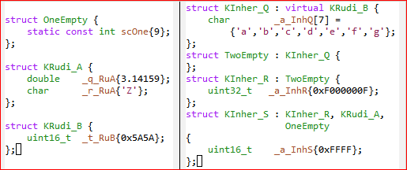
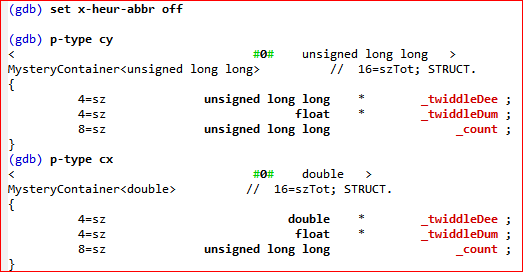
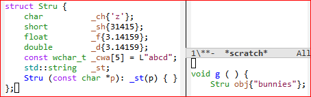

PrCxx: Extend GDB's Presentation
of STL, C++ Types and Objects
Copyright © 2020 Vainstein K.
Permission is granted to copy, distribute and/or modify this document
under the terms of the GNU Free Documentation License, Version 1.3
or any later version published by the Free Software Foundation;
with no Invariant Sections, no Front-Cover Texts, and no Back-Cover
Texts. A copy of the license is includes in the section entitled “GNU
Free Documentation License”. |
Overview
An effort to improve the experience of debugging C++ code with GDB; by displaying relevant information compactly, and through extra insight into STL objects.
Typographical conventions:
| |
a GDB command |
|
command output |
|
a GDB parameter |
|
parameter value
|
Print and Explore STL Objects
print scalarObj | aggregObj
Once your GDB has been setup to automatically load PrCxx (see HOWTO-INSTALL.txt file), instead of printing an STL object as it normally would, GDB will instead hand it over to PrCxx.
So now our old friend print (or just p) will print
- a std::string as if it were a C string
- an std::vector as if it were a C array
- an associative-lookup aggregate as if C had such a type natively
; which is nice.
Should you wish to print something the GDB-native way, you can do so anytime without having to tear out PrCxx; just append the /r switch:
Two perhaps unobvious ways to enjoy pretty-printing of STL-objects:
The usual modifiers of print all apply; if you have a std::<vector> of ints, you can see them as base-10 values with p/u or in hex with p/x.
GDB will happily pretty-print STL object fields of your types, if you just enable opaque-type-resolution (set it to on).
print iteratorObj
When you print an iterator, PrCxx will pretty-print the aggregate element said iterator points to:
The std::back_inserter() function returns not a regular iterator pointing at an element, but an iterator adapter pointing at (one end of) the entire aggregate; that is why output of printing itU is the entire v.
Merely pretty-printing STL containers is no big deal; it might even be baked into your version of GDB. But we have a few more tricks in store!
q-target-addr indirectorObj
Returns address of whatever the given indirector points to or wraps. By indirector here is meant any of:
- iterator
- smart pointer
- std::reference_wrapper
- “smart wrapper” introduced in C++17 (std::any, std::optional, std::variant)
Note that the returned address is not just printed: it is available in GDB's value history.
Nice to have; but does not tell us whether address of an iterator's target is valid.
q-iter-into aggregObj iterObj
The q-iter-into command reports whether an iterator I is valid with respect to an aggregate A; useful when you suspect an iterator has been invalidated, or maybe is valid but points into another aggregate object.
Prints: one of withinBounds_and_valid , withinBounds_but_invalid , outOfBounds .

Note that we reported itD valid with respect to v_odds, but not with respect to v_evens.
Now we have resize()d v_odds down to 4 elements from its original 5, and we have not invoked shrink_to_fit(). The 5th element, to which itE had been pointed, is still within bounds of memory managed by v_odds (and, indeed, we can still print it just fine); but itE is no longer valid.
The withinBounds_but_invalid result can only obtain when container is std::basic_string<Ch> , std::deque<T> , or std::vector<T> .
q-count-elems aggregObj
An STL container's size() function — if the container is not std::forward_list<E> which does not even define size() — is sometimes unavailable in a GDB session (“Function may be inlined”, GDB will suggest); therefore, it is good to have an alternative way to get element count.
Returns: nonnegative integer. Note that the returned uint is not just printed: it is available in GDB's value history.
q-has-elem aggregObj idx | key
Returns: true or false.
q-elem aggregObj idx | key
Simply prints the found element.
q-elem-addr aggregObj idx | key
Returns address of the found element. Note that the returned address is not just printed: it is available in GDB's value history.
q-elem-key-addr aggregObj key
Returns address of the key under which the element was found. Note that the returned address is not just printed: it is available in GDB's value history.
An example of when address of key might be of interest is directly below: looking at keys with same hashcode — 6, say — we note that keys added later have a higher address. Of course, that correspondence might not hold after a rehash or a bucket-level operation.
q-buckets aggregObj_based_on_hashtable
Prints elements' keys grouped by bucket; shows every key's hashcode.
(This example was contrived to maximize visual clarity; hashing strings by their length in a real program would, of course, be an extremely bad idea!)
q-more any_supported_STL_obj
Prints information about given object, more than what simple GDB commands can. Which kinds of information are available varies by input; but before looking at the ones available for only a few particular STL types, let us go over the ones available more commonly.
q-more Output Available for Most Container Types
(All sizes in bytes.)
| Notes |
|---|
| nElements_valid |
Count of valid elements.
Given container<E> co , this is what co.size() would return if available.
|
| nElements_allocated |
For { std::basic_string<Ch> , std::deque<T> , std::vector<T> } this is ≥ nElements_valid.
For all others this is = nElements_valid.
|
| sizeof_element |
Given container<E> co , this is simply sizeof(E).
|
| sizeof_node |
By node is here meant the entire per-element memory usage peculiar to this container's underlying data structure; includes pointer(s) to other nodes, the enclosed element, and any padding.
|
| sz_used__objProper |
Size of the STL object itself.
Given container<E> co , this is simply sizeof co.
|
| sz_used__outsideObj |
Memory (heap-allocated) outside of the STL object, but managed by it.
|
| sz_used__total |
sz_used__objProper + sz_used__outsideObj
|
| sz_overhead |
Overhead compared to the most compact consecutive layout of the contained valid elements, i.e. to a C array.
sz_used__total - nElements_valid * sizeof_element
|
| sz_interstitial_traversal |
A measure to help estimate the relative cache-friendliness of a container. It is computed as sum of address distances between boundaries of the container's valid nodes, if said nodes are traversed by a normal forward iterator.
|
q-more Output Specific to std::basic_string
Example:
smallObjectOptimization:True
Small-object optimization for std::basic_strings is, quite simply, when the string payload is small enough to fit into a std::basic_string object itself.
q-more Output Specific to std::set, std::map
Example:
rbTree_height=2
q-more Output Specific to std::unordered_set, std::unordered_map
Example:
nBuckets=7
bucketLoadStats: {
geometric mean = 0.001
arithmetic mean = 1.400
population standard deviation = 0.756
0th percentile (minimum) = 0
25th percentile = 0
50th percentile (median) = 1
75th percentile = 1.5
100th percentile (maximum) = 2
}
The “average” reported by std::unordered_set::load_factor() and std::unordered_map::load_factor() is the arithmetic mean.
Concisely Name STL Types
Custom allocator used in code examples to follow:
q-whatis someObj
Like GDB's built-in whatis, in that it also prints an object's type; different, in that it prints STL types concisely. That is achieved by special treatment of an STL types' template parameters, adjustable with x-template-args.
Of these three std::vector<E,ALLO> instances, vx accepts the default allocator implicitly, vy specifies the default allocator explicitly, and vz employs a custom allocator:
How q-whatis handles a template arguments:
|
|
x-template-args set to full
|
x-template-args set to skipIfDefault
|
|
if corresponding parameter has no default
|
Print, as is.
In screenshot above: float.
|
⇦ same
|
|
if template argument is same as corresponding parameter's default
|
Print that particular parameter's abbreviated nickname, enclosed in # marks.
In screenshot above: #ALLO#.
|
Skip.
|
|
if template argument differs from corresponding parameter's default
|
Print, after substituting the abbreviated nickname of any previous template parameters.
In screenshot above: Mallocator<#E#>.
|
⇦ same
|
Should you wish to not see template arguments at all, set x-template-args to omit:
Type Information Loss Due to auto
Consider these two std::list<float> objects, the first accepting std::list's default allocator while the second uses a custom allocator (the Mallocator defined in example directly above):
Accompanying x_default_allo are 2 simple iterators which obviously ought to be of same type; and mutatis mutandis for y_custom_allo.
Handed xiterB and yiterB — declared with decltype — q-whatis reports allocator type if custom but skips it when default; fine. But handed xiterA and yiterA — declared with auto — q-whatis prints ?? instead!
This is not a PrCxx bug. PrCxx can only report information available to GDB; and as running the GDB-native whatis shows, some type information is unavailable to GDB when an iterator is declared with auto. Printing ?? here is actually a feature: PrCxx knows that it lacks full information, and informs you of the fact.
(Similar type information loss may also occur in other cases; this is just the only one noted thus far.)
Special Treatment for std::move_iterators
According to GDB, itB and itC in this example have different types:
Effectively, however, they seem to be exactly same: a non-const iterator into std::vector<float>, adapted to move rather than copy, and adapted to scan from the back to the front when incremented. A simplification appears justifiable and even helpful; accordingly, we
- have q-whatis report the same type — the underlying, or “pre-adapted”, iterator type — as type of itB and itC and even the silly itD; and
- charge q-more with reporting whether its argument iterator has been std::move_iterator adapter wrapped.
Further std::basic_string<Ch> and std::basic_string_view<Ch> Concision
With default template args skipped, PrCxx can further abbreviate the common specializations of these:
“Depth Gauge” for Nested Template Arguments
Abbreviation alone does not suffice to give visual clarity when template arguments are nested: often it is altogether non-obvious which nesting level a particular template argument pertains to! To help in these cases, q-whatis prepends a sequence of ' marks, one for each level of nesting, to a template argument's nickname:

Falling far short of perfection, result nevertheless represents a substantive improvement over the alternative.
q-precis fully_expanded_typeName
What if you already have a fully expanded type name expression (perhaps from a compiler or linker message)? Just hand it to q-precis:
Unfortunately, q-precis can only succeed if the exact type given belongs to an object that GDB knows about; not even an utterly straightforward and innocuous variation, like replacing long with short above, will pass.
Print Any C++ Types and Objects (Alternatives to GDB's Built-Ins)
p-type someObj | typeName
p-stype typeName
p-vtype someObj
Aims to present a struct or class type, complete with its fields and their relationships, in a concise but informative manner:
- static members, marked static or |S, are listed first.
- The other members are listed in layout order, i.e. by their offset relative to the top-level type.
- A struct is listed before its constituents.
- A base class is listed before the data members inherited from it.
- const members are marked C.
- volatile members are marked V.
Normally, you pass either a type name string or an object name to p-type, and let it figure out what you meant. If needed or desired, you can avail yourself of the p-stype variant (always interprets its argument as type name string) or the p-vtype variant (always interprets its argument as object name).
Whereas p-vtype becomes available only once GDB has a runtime state to examine, p-stype is available as soon as GDB has loaded symbol tables — before you have issued run!
For each of several aspects (layout, composition, inheritance, ...) p-type lets you choose the amount of information presented — from “omit altogether” to “full info dump”; the sub-sections below explain those choices.
Adjust Print Width of Member Types contra Member Names
The former is controlled by x-print-width--member-type, the latter by x-print-width--member-name; adjust according to your preference and need.
Choose Presentation of: Layout
When x-layout is set to full, each data member's offset and size are shown, and all padding regions are indicated (look for Pad|).
When to onlySize, only data member sizes are shown.
When to omit, not even data member sizes:
Choose Presentation of: Composition
Consider these structs related by composition:
Here Sa has-a Sb, and Sb has-a Sc.
|
|
When x-nested-datamemb is set to omit, top-level data members appear opaque:
(Pretty much like looking at a class's definition in your source.)
|
|
|
When x-nested-datamemb is set to flatten, nested structs are not shown — you only see their data members:
This view “flattens” (hence the name) a composition hierarchy; if we organized classes related by composition as nodes of a tree, this would be the view of just the leaves.
|
|
|
When x-nested-datamemb is set to full, we show all the nested objects; each's composition relation to the top-level type is specified on a separate line underneath:
- “N=dep” means N is the nesting depth;
- “comPar=X” means X is the composition parent;
- “comAnc=Y” means Y is the composition ancestor (i.e. the ancestor whose parent is the top-level type).
Tips for getting the most from such output:
- To focus on a nested struct, simply p-type it: in this example, p-type Sb and p-type sa._sb will both “drill down” on the nested Sb struct.
- Search for the name of a nested datatype, to immediately see its parent and children; easily done after saving to a GDB logfile or pasting into a tempfile (and altogether effortles if running GDB from Emacs).
|
Should you wish to see the full display but without the extra lines denoting composition relations, just disable x-relations (i.e. set to off).
PrCxx recognizes STL types, and will not descend into the struct implementing an STL type if said struct is a data member of the top-level type you asked p-type about. For example, PrCxx descends into TwoWays::_sB, but not into TwoWays::_sA here:
Choose Presentation of: Inheritance
Consider these structs related by inheritance:

|
|
When x-base-classes is set to omit, neither base classes nor any data members therefrom inherited are shown.
|
|
|
When x-base-classes is set to flatten, base classes are omitted but data members inherited from them are shown:
This view “flattens” (hence the name) an inheritance hierarchy; if we organized classes related by inheritance as nodes of a tree, this would be the view of just the leaves.
|
 |
|
When x-base-classes is set to skipIfEmpty, only empty bases are skipped:
This view can be most helpful when working with a “dauntingly tall” inheritance hierarchy.
Note use of numbered tags (delimited by green @ marks) to refer to respective base classes.
|
|
|
When x-base-classes is set to full, we show all base classes and data members inherited therefrom; each member's inheritance relation to the top-level type is specified on a separate line underneath:
- “N=dep” means N is the nesting depth;
- “inhPar=X” means X is the inheritance parent;
- “inhAnc=Y” means Y is the inheritance ancestor (i.e. the point where inheritance chain ends).
The notation is intentionally analogous to that used in reporting composition relations.
|
Should you wish to see the full display but without the extra lines denoting inheritance relations, just disable x-relations (i.e. set to off).
Choose Presentation of: Template Arguments
PrCxx handles non-STL types' template arguments much the same way it handles STL types' (refresh above), but with two major differences:
- For each supported STL type PrCxx “knows” which of an instantiation's template arguments are defaults, but no such knowledge is coded in PrCxx for your types; therefore, p-type of a non-STL templated type will yield same output with x-template-args = skipIfDefault as with x-template-args = full.
- For each supported STL type PrCxx “knows” a mnemonic nickname for each template parameter, but no such knowledge is coded in PrCxx for your types; therefore, for a non-STL templated type, template arguments will be referred to not by nickname but by number, similarly enclosed in # marks. (A nicknumber, if you will.)
Consider these struct templates and instantiations:
PrCxx never substitutes numeric template arguments with references to their positions in the type's template parameter list. (All too easy to conceive of a scenario where such a substitution would be a risible solecism; and, abbreviating one number with another number would retard clarity while not advancing concision.)
In type designations of STL objects, nicknumbers are substituted only for the template parameters without defaults. In example above, only the first 2 template arguments of Tb::_br's type are so substituted; std::greater<#K#> is printed just as it would be if we lacked context of containing struct, as is the case when we invoke q-whatis on Tb::_br directly.
Toggle Heuristic Abbreviation of Types
PrCxx will always abbreviate a type, by textual substitution of base class and template argument types, when such an abbreviation is certainly correct; for example, the special @TOPLEV@ tag referring to the top-level type you'd asked p-type about.
With x-heur-abbr enabled (i.e. set to on), PrCxx will also perform abbreviations that are highly plausible.
|
|
Most often, as with cx in this example, such abbreviations improve concision and hence clarity:
But in some cases, as with cy in this example, such abbreviations can add gratuitous confusion:
|
|  |
|
If confronted with such a case, you can restrict PrCxx to making only certainly-correct abbreviations; just disable x-heur-abbr (i.e. set it to off):
|
Underlying or Alternative Type Designations
With x-underly enabled (i.e. set to on), any alternative designations known for each data members' types are shown on a separate line underneath. A simplest example of alternative type designation would be that found in the source — before decoding all typedefs.
p-deep someObj
An extension of p-vtype, p-deep also prints each data member's value. The value is shown on a separate line directly following each data member, in blue; PrCxx tries to show each value in up to 2 ways:

| On the left, italicized, the raw bytes in hex. (Up to 12 leading bytes.) |
|
On the right, “prettily” — where doable without ambiguity. Recall, you can always print (p). |
Miscellaneous Features
Alternative Indexing of std::pair
These will work as lookupKey:
Alternative Indexing of std::ratio
These will work as lookupKey (case-insensitive):
- 0 or num or numer
- 1 or den or denom
x-remind Yourself of Parameters' Current & Default Values
Shows at once all of our custom GDB parameters. For each parameter, lists the possible values, with the default value shown bracketed, and the current value shown against yellow background.
In example above all parameters are set to their defaults, except for x-relations, x-base-classes, and x-print-width--member-name.
x-default-all
Resets all of our custom GDB parameters to their defauls.
z-frames, z-blocks, and Related
These commands do not cohere with PrCxx's main thrust, and anyway are not polished enough to speak much about. Briefly:
GDB's built-in backtrace is complemented by z-blocks:
You can view blocks from the standpoint of another frame without changing frame selection, with z-iterdump-block-of-frame-N:
All in all, commands related to z-frames and z-blocks are:
- z-iterdump-block-of-frame-N frame#
- z-iterdump-block-curr
- z-iterdump-block-global
- z-iterdump-block-static
You can choose how source files are identified by toggling the x-full-paths parameter: when enabled (i.e. set to on), full path is printed; when disabled, just the basename — demo.cpp in the example above.
Extend, to Better Pretty-Print Your Own Types
// TODO
Appendix A: Custom GDB Parameters
Just as GDB's built-in parameters, custom parameters enjoy GDB's tab-completion (both of parameter name and legal values) when being set, respond to show, and print a short explanation if prefaced with help set or help show.
All these can be set with set and shown with show, just like GDB's own built-in parameters; but for these, you also have
x-remind
and
x-default-all
x-full-paths → on | off
x-heur-abbr → on | off
x-relations → on | off
x-underly → on | off
x-layout →
full | onlySize | omit
x-base-classes →
full | skipIfEmpty | flatten | omit
x-nested-datamemb →
full | flatten | omit
x-template-args →
full | skipIfDefault | omit
x-print-width--member-type →
N
N ≥ 10.
x-print-width--member-name →
N
N ≥ 5.
Appendix B: Most Pertinent of GDB's Built-In Parameters
| | Notes |
|---|
| print address |
boolean, on|off |
If on, whenever GDB prints some object with address known to compiler (not a temporary value!) it will also print said object's address.
Adds to confusion when printing a std::string. |
| print array |
boolean, on|off |
If on, GDB will print array-like aggregates with each element on its own line. |
| print elements |
unsigned, N |
Limits how many many of an aggregate's elements GDB will print (starting from the first). If 0, unlimited. |
| print null-stop |
boolean, on|off |
If on, GDB will stop printing a string-like aggregate when happens on a NUL character. |
| opaque-type-resolution |
boolean, on|off |
If on, print will descend into a type T, even if T is not natively printable. Now that you have PrCxx, you can enable this parameter and not risk a dog's breakfast on your screen. |
| print repeats |
unsigned, N |
An M-long streak of identical elements will be replaced by "repeats M times", if M ≥ N and N ≠ 0.
Decides whether all individual elements of a std::bitset are printed. |
| print static-members |
boolean, on|off |
If off, neither GDB's built-in ptype nor PrCxx's p-type will display the static data members of a class.
|
Appendix C: Supported STL Types
- std::any
- std::array<T,ℕ>
- std::atomic<T>
- std::atomic_flag
- std::basic_string<Ch,ChTRAITS,ALLO>
- std::basic_string_view<Ch,ChTRAITS>
- std::bitset<ℕ>
- std::deque<E,ALLO>
- std::forward_list<E,ALLO>
- std::function<R(T1,T2,…)>
- std::initializer_list<T>
- std::integer_sequence<ℤ1,ℤ2,…>
- std::list<E,ALLO>
- std::map<K,V,CMP,ALLO>
- std::multimap See std::map
- std::multiset See std::set
- std::pair<K,V>
- std::optional<T>
- std::priority_queue<E,CONT,CMP>
- std::ratio<NUMER,DENOM>
- std::reference_wrapper<T>
- std::queue<E,CONT>
- std::set<E,CMP,ALLO>
- std::stack<E,CONT>
- std::string See std::basic_string
- std::string_view See std::basic_string_view
- std::shared_ptr<T>
- std::tuple<T1,T2,…>
- std::unique_ptr<T,T_DEL>
- std::unordered_map<K,V,HASH,EQ,ALLO>
- std::unordered_multimap See std::unordered_map
- std::unordered_multiset See std::unordered_set
- std::unordered_set<E,HASH,EQ,ALLO>
- std::variant<T1,T2,…>
- std::vector<E,ALLO>
- std::weak_ptr<T>
Appendix D: Environments Where Tested
- GDB 8.1.1, GNU libstdc++ 7.3.0, MINGW32_NT_6.1 (MSYS2 MinGW 32-bit)
- Tested both directly in shell, and via GUD Mode of GNU Emacs 25.3.1
- Programs with std::basic_string_view crash, so that not tested.
- GDB 8.2, GNU libstdc++ 8.3.1, GNU/Linux 4.18.0 (64-bit)
Appendix E: Known Issues with Known Workarounds
Command Barfs When Argument is a Multi-Token Expression
p-type * bx._b4
Given 2 arguments, but command expects 1.
Use a GDB convenience variable:
set $foo = * bx._b4
p-type $foo
Or just forego whitespace:
p-type *bx._b4
Appendix F: Known Issues without Workarounds
| Descr | Notes |
|---|
|
add support for std::basic_regex, std::sub_match, std::match_results
|
|
|
see if maybe can pretty-print va_list? (the N of elements, at least?)
|
|
| what if user has VT-100 equivalent (monochrome but can do bold and italic) terminal? what if user has a totally bare-bones monochrome without even bold?
|
|
Appendix G: GNU Free Documentation License
Here.